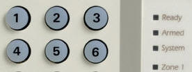

DSC hibajelenségek
A DSC lakásriasztókat többféle kezelőegységgel forgalmazzák de minden esetben a felső részben helyet foglaló sárga színű System lámpa jelzi a meghibásodást. A régi kezelő egységeken ez a sárga lámpa az otthoni módban is égve marad.

Az új tipusokon ez a jelzőlámpa egy sárgán világító háromszög
Ha a kezelő elkezd csipogni és kigyullad a sárga jelzőfény az hibára utal. Hívjon minket nyugodtan hogy megelőzhessük a komolyabb problémákat.